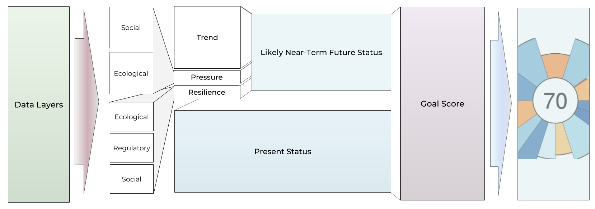
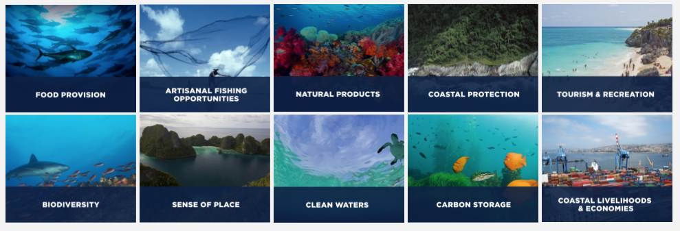

How to Calculate a Goal Score

Each of the ten goals have their own unique methodology. Methodologies are built around the types of available data, appropriate for the analysis – consistently quantified across the spatial scale of the assessment and quality-controlled – and based on the best scientific understanding of the subject per expert input and peer review. Each goal score calculation takes a few different data layers that inform present status and likely near-term future status, which is calculated from trend, pressure, and resilience information.
Artisanal Fishing Opportunity
\[\begin{aligned}
& x_{ao} \text{ is the status of the artisinal fishing goal}\\
\\
& x_{ao} = (1 - D_u) * S_{ao}\\
& D_u = (1 - PPPpcGDP) * (1 - O_{ao})\\
\\
& D_u \text{ is the unmet demand}\\
& S_{ao} \text{ sustainability weighting; 1 if no data or perfectly sustainable}\\
& O_{ao} \text{ is the access to artisinal-scal fishing, defined by Mora et al. (2009)}\\
& PPPpcGDP \text{ is ln-transformed rescaled purchasing power parity adjusted per capita GDP}
\end{aligned}\]
Biodiversity: Species Subgoal
\[\begin{aligned}
& x_{spp} \text{ is the status of the species biodiversity sub-goal}\\
\\
& x_{spp} = max \left(\frac{\bar{R}_{spp} - 0.25}{0.75}, 0 \right)\\
\\
& \bar{R}_{spp} = \left(\sum^M_{c=1} \left( \sum^{N_c}_{i=1} w_i \right) \times A_c \right) \left(\sum^M_{c=1} A_c \times N_c \right)^{-1}\\
\\
& \bar{R}_{spp} \text{ region's area-weighted mean of species risk, with floor at 25% representing catastrophic loss of biodiversity}\\
\\
& \sum^M_{c=1} A_c \times N_c \text{ is the species count-weighted area across all cells in the region}\\
\\
& N \text{ is the number of species ($N_c$ is number species in cell $c$)}\\
& M \text{ is number of gridded cells the region's area contains}\\
& c \text{ a 0.5 degree grid cell within a region}\\
& w_i \text{ the risk status for each species $i$, assigned based on IUCN threat category}\\
& A_c \text{ area of cell $c$}
\end{aligned}\]
Biodiversity: Habitats Subgoal
\[\begin{aligned}
& x_{hab} \text{ is the status of the habitat biodiversity sub-goal}\\
\\
& x_{hab} = \left(\frac{1}{N}\right) \sum ^N_{k=1} C_k\\
\\
& C_k = \frac{C_c}{C_r}\\
\\
& C_c \text{ is the current condition specific to each $k$ habitat present in the region}\\
& C_r \text{ is the reference condition specific to each $k$ habitat present in the region}\\
& N \text{ is the number of habitates in the region}
\end{aligned}\]
Carbon Storage
\[\begin{aligned}
& x_{cs} \text{ is the status of the carbon storage goal}\\
\\
& x_{cs} = \left(\sum^N_{k=1} (h_k \times w_k \times A_k) \right) \left(\sum^N_{k=w} (w_k \times A_k) \right)^{-1} \\
& h = \frac{C_c}{C_r}\\
\\
& h \text{ is a measure of carbon-storing habitat's condition with respect to its reference condition}\\
\\
& C_c \text{ is the current health of carbon-storing habitat $k$ (mangrove, saltmarsh, seagrass)}\\
& C_r \text{ is the reference condition of habitat $k$}\\
& w \text{ is the rank weight of the habitat's contribution to total carbon storage (Laffoley & Grimsditch)}\\
& A \text{ is the area within a region for each $k$ habitat type}\\
\end{aligned}\]
Clean Waters
\[\begin{aligned}
& x_{cw} \text{ the status of the clean waters goal, calculated only for the first 3 nm of ocean for a region's EEZ}\\
\\
& x_{cw} = \sqrt[4]{a * u * l * d}\\
\\
& a := 1 - \text{the number of people without access to sanitation, rescaled to the global maximum}\\
& u := 1 - \text{nutrient input, rescaled at the raster level by the 99.99th quantile value}\\
& l := 1 - \text{chemical input, rescaled at the raster level by the 99.99th quantile value}\\
& d := 1 - \text{marine debris, rescaled at the raster level by the 99.99th quantile value}\\
\end{aligned}\]
Coastal Protection
\[\begin{aligned}
& x_{cp} \text{ is the status of the coastal protection goal}\\
\\
& x_{cp} = \left(\sum^N_{k=1} (h_k \times w_k \times A_k) \right) \left(\sum^N_{k=w} (w_k \times A_k) \right)^{-1} \\
& h = \frac{C_c}{C_r}\\
\\
& h \text{ is a measure of the habitat's condition with respect to its reference condition}\\
& C_c \text{ is the current health of shoreline-protecting habitat $k$ in a region (mangrove, saltmarsh, coastal sea ice, coral reefs, seagrass)}\\
& C_r \text{ is the reference condition of habitat $k$}\\
& w \text{ is the rank weight of the habitat's protective ability}\\
& A \text{ is the area within a region for each $k$ habitat type}\\
\end{aligned}\]
Food Provision: Fisheries
\[\begin{aligned}
& x_{fis} \text{ is the status of the wild-caught fisheries, fisheries food provision sub-goal}\\
\\
& x_{fis} = \prod^n_{i=1} SS_i^\left(\frac{C_i}{\sum C_i} \right) \\
\\
& \displaystyle{ SS =
\begin{cases}
B/B_{MSY} , & \text{ if } B/B_{MSY} < 0.95 \\
1 , & \text{ if } 0.95 \leq B/B_{MSY} \leq 1.05 \\
max\{1 - \alpha(B/B_{MSY} - 1.05), \beta \} , & \text{ if } B/B_{MSY} > 1.05 \\
\end{cases}
} \\
\\
& SS \text{ are stock status scores}\\
& B/B_{MSY} \text{ is maximum sustainable yield for a stock}\\
& C_i\text{ }/\text{ }\Sigma C_i \text{ is the relative contribution of a stock $i$ to overall catch}\\
& C \text{ is the average catch since the first non null record, for each taxon within each region}\\
\\
& i \text{ is an individual taxon}\\
& n \text{ is the total number of taxa in the reported catch for each region throughout the time-series}\\
& \alpha \text{ is set to be 0.5, status decline rate, to endure penalty for under-harvested stocks is half of that for over-harvested stocks}\\
& \beta \text{ is the minimum score a stock can get, set to 0.25}
\end{aligned}\]
Food Provision: Mariculture
\[\begin{aligned}
& x_{mar} \text{ is the status of the mariculture food provision sub-goal}\\
\\
& x_{mar} = \frac{Y_c}{Y_{c, \text{ } ref}}\\
\\
& Y_c = \left(\sum^N_{k=1} Y_k \times S_{k, r}\right)\left(\frac{1}{P_r}\right)\\
\\
& Y_c \text{ is the current sustainably-harvested yield within each country, per person within 25 miles of the region's coast}\\
& Y_k \text{ is the 4-fyear moving average of tonnes of production for each $k$ mariculture species currently or at one time cultured within a country}\\
& S_{k, r} \text{ is the sustainability score for each $k$ mariculture species and region}\\
& P_r \text{ is the population within 25 miles of the region's coast}\\
& Y_{c, \text{ } ref} \text{ is the $Y_c$ value that corresponds to the 95th quantile across all regions and years}\\
& N \text{ is the number of harvested mariculture species $k$}
\end{aligned}\]
Livelihoods & Economies: Livelihoods Subgoal
\[\begin{aligned}
\end{aligned}\]
Livelihoods & Economies: Economies Subgoal
\[\begin{aligned}
\end{aligned}\]
Natural Products
\[\begin{aligned}
\end{aligned}\]
Sense of Place: Iconic Species Subgoal
\[\begin{aligned}
\end{aligned}\]
Sense of Place: Lasting Special Places
\[\begin{aligned}
\end{aligned}\]
Tourism & Recreation
\[\begin{aligned}
\end{aligned}\]
